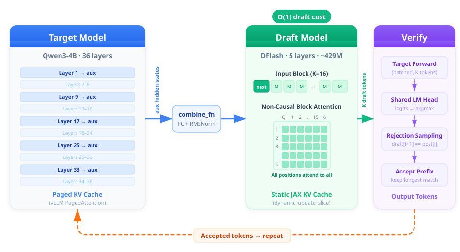

Autoregressive LLM decoding is inherently sequential: each token depends on the last, so generating \(n\) tokens requires \(n\) forward passes through the full model. This makes decoding the dominant latency bottleneck for long-form tasks such as chain-of-thought reasoning and code generation. Speculative decoding alleviates this by having a lightweight draft model propose multiple candidate tokens, which the full target model then verifies in a single batched pass, accepting correct tokens and falling back to standard decoding only at the first rejection.
DFlash advances this paradigm by replacing the conventional autoregressive drafter with a diffusion-based block drafter. While methods like Eagle3 still generate draft tokens one at a time (\(\mathcal{O}(k)\) passes for \(k\) tokens), DFlash uses a compact 4-layer transformer with non-causal attention to predict an entire 16-token block in a single parallel forward pass, reducing draft cost to \(\mathcal{O}(1)\). It reuses the target model’s embedding layer and LM head, requiring no separate vocabulary and enabling training on just 289K samples.
We port DFlash from GPU to TPU within vLLM’s tpu-inference stack, addressing challenges including dual KV cache management, non-causal attention kernel routing, and a critical sequence-length alignment bug whose fix alone nearly doubled performance.
Evaluated on Qwen3-4B across 9 benchmarks spanning math, code, and chat tasks on TPU V5P, our port achieves \(\mathbf{3.01\times}\) standalone speedup and \(\mathbf{2.31\times}\) in the full serving pipeline, reaching \(\mathbf{94.9\%}\) of published GPU draft quality.
Porting DFlash from GPU/PyTorch to TPU/JAX required rethinking every stateful component.
PyTorch’s DFlash relies on mutable state: DynamicCache.append(), in-place tensor ops, and Python-level control flow.
JAX is functional: all arrays are immutable and model functions must return new state, driving the architecture of every subsystem below.

DFlash’s draft tokens attend to all \(K\) positions bidirectionally, but the TPU runtime’s default attention (ragged paged attention) is causal-only.
We implemented a separate kernel (dflash_concat_attention) that concatenates context and noise K/V, applies a non-causal mask within the block and a causal mask to the cache, and routes through TPU Pallas flash_attention with causal=False.
The target model uses vLLM’s paged KV cache; the draft model uses pre-allocated contiguous JAX arrays per layer, updated immutably via dynamic_update_slice.
This design evolved through three iterations: an initial context-buffer-only approach lost K/V history (\(\tau = 2.38\)), a naïve per-layer cache collapsed due to pytree mismatch triggering JIT retracing, and the final version pads context to the next power-of-2 to cap retrace shapes at \(\sim\!12\).
The most impactful discovery: vLLM’s speculative decoding manager passed seq_lens that included unverified draft tokens, inflating the length by 10 to 16 phantom tokens per step.
This silently corrupted the context buffer, KV cache positions, and RoPE embeddings simultaneously.
A four-line fix, extracting the ground-truth accepted count (num_tokens_no_spec), nearly doubled performance (\(\tau\!: 2.49 \to 4.48\), speedup: \(1.30\times \to 2.31\times\)).
Three A/B experiments confirmed correctness: toggling between Pallas flash_attention and manual dot-product, switching position schemes, and disabling the KV cache entirely all produced bit-identical outputs.
The remaining gap versus GPU paper numbers (\(\tau = 6.67\) vs. \(7.07\)) is attributable to checkpoint differences, not implementation bugs.
We evaluate DFlash on Qwen3-4B (target) with DFlash-b16 (draft, block size 16) on a single TPU V5P host (4 chips, 8 cores). Benchmarks span 9 datasets across three task categories: math (AIME 2024, AIME 2025, MATH-500, GSM8K), code (HumanEval, MBPP, SWE-Bench), and chat (MT-Bench, Alpaca). All experiments use greedy decoding (temperature = 0) to ensure deterministic, reproducible comparisons.
In standalone mode (raw model decoding without the vLLM serving layer), DFlash achieves an average \(\mathbf{3.01\times}\) speedup over autoregressive decoding, peaking at \(\mathbf{3.72\times}\) on math tasks where token predictability is highest. In the full vLLM serving pipeline, which adds scheduling, paged KV cache management, and rejection-sampling overhead, the speedup is \(\mathbf{2.31\times}\).
Critically, TPU draft quality matches the original GPU implementation: our port achieves \(\mathbf{94.9\%}\) of published GPU \(\tau\) (accepted tokens per draft) on average, and exceeds GPU on MATH-500 (\(8.80\) vs. \(7.84\)). The small remaining gap is attributable to bf16 vs. fp16 numerical precision rather than any architectural limitation.
We have demonstrated that diffusion-based speculative decoding transfers effectively from GPU to TPU, despite fundamental differences in programming models and hardware characteristics. By porting DFlash from PyTorch to JAX within the vLLM serving stack, we addressed three core engineering challenges: implementing non-causal attention through a dedicated Pallas kernel, designing an immutable KV cache architecture compatible with JAX's functional paradigm, and diagnosing a critical sequence-length inflation bug in vLLM's speculative decoding manager.
Our evaluation across 9 benchmarks spanning math, code, and chat tasks shows that the TPU port achieves \(\mathbf{94.9\%}\) of GPU draft quality (\(\tau\)) while delivering \(\mathbf{3.01\times}\) standalone speedup and \(\mathbf{2.31\times}\) end-to-end vLLM pipeline speedup over autoregressive decoding. Notably, DFlash's single-pass block drafting is a natural fit for TPU's architecture: verification cost remains flat as block size grows, unlike autoregressive drafters (e.g., Eagle3) where cost scales linearly with draft length.
The cost analysis further validates TPU as a compelling platform for speculative decoding. At GCP on-demand pricing, TPU V5P with DFlash achieves the lowest cost per million tokens among all hardware and method combinations tested, making it a practical choice for production LLM serving workloads.
V5P baseline is \(1.69\times\) faster than V4; absolute DFlash TPS is higher on V5P across all benchmarks.
$/million tokens at GCP on-demand pricing. V5P + DFlash is the most cost-efficient option.
Several directions remain open for further improvement:
@misc{2025capstone_dflash_tpu,
author = {Feng, Aaron and Luo, Zhongyan and Nguyen, Son and Huang, Andy},
title = {Porting DFlash to TPU: Accelerating LLM Inference with Speculative Decoding},
year = {2025},
institution = {UC San Diego},
note = {DSC 180 Capstone Project},
}